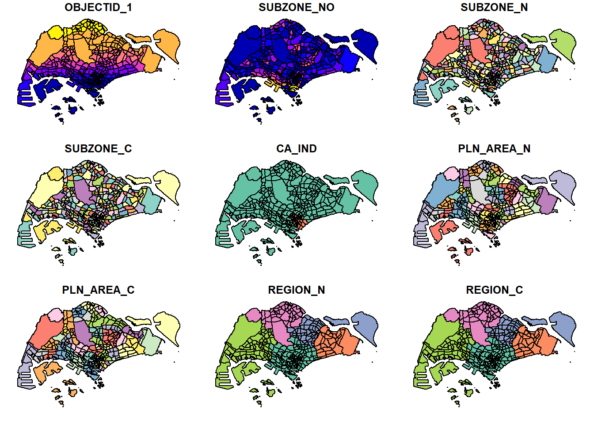
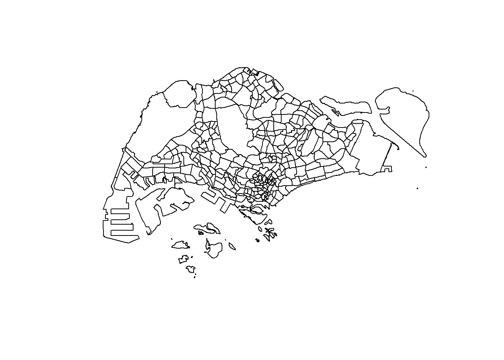
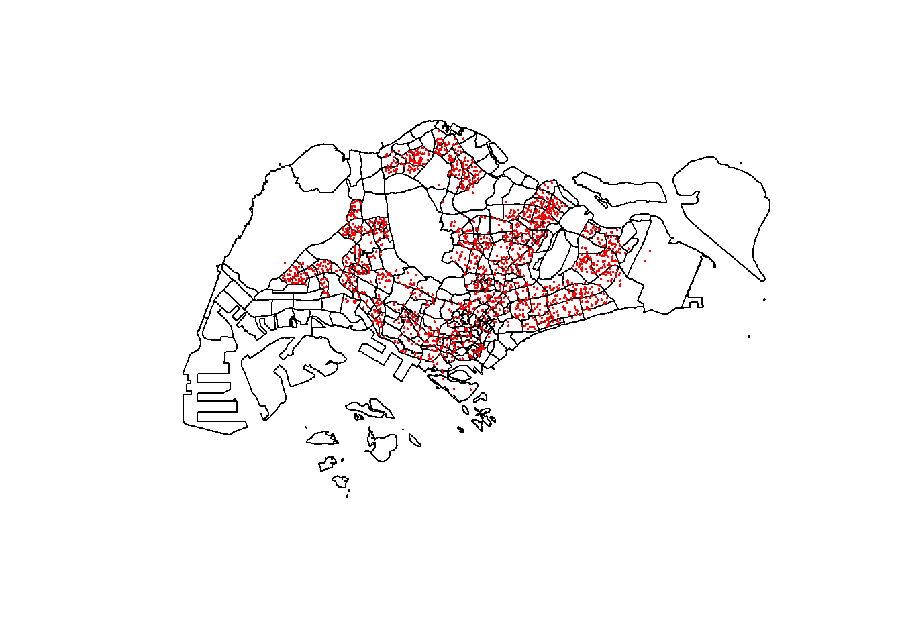
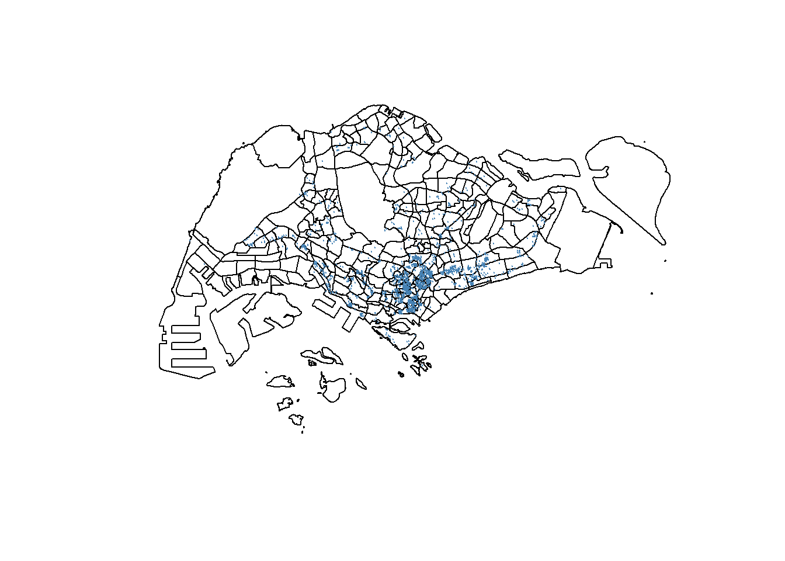
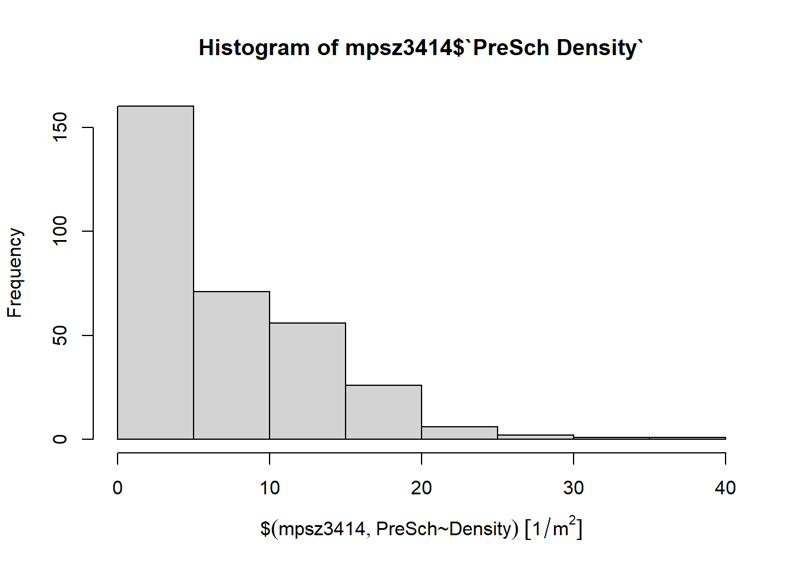
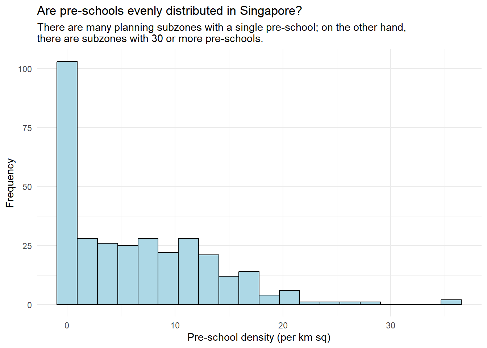
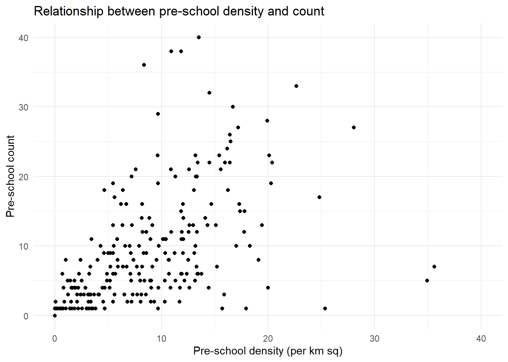

pacman::p_load(sf, tidyverse, rvest)Hands-on Exercise 1: Geospatial Data Science with R
Importing, projecting, and analysing geospatial data with the sf package
1 Overview
The goal of this exercise is to get familiar with sf (simple features), R’s core package for handling geospatial data. Specifically, we will:
- Set up an R environment for geospatial analysis.
- Import three different geospatial data formats: GeoJSON (polygons), KML (points), and ESRI Shapefile (lines).
- Import a plain tabular dataset with latitude/longitude columns and convert it into a spatial layer.
- Inspect the data and assign/transform its coordinate reference system (CRS).
- Run basic GIS geoprocessing: buffering and point-in-polygon counting.
- Use
ggplot2for exploratory data analysis (EDA).
Coming from Python, most of this exercise is just relearning names for things I already know: st_read() is geopandas.read_file(), an sf object is basically a GeoDataFrame with its geometry column, st_crs()/st_transform() map to gdf.crs/gdf.to_crs(), st_buffer() is gdf.buffer(), and %>% is doing roughly what method chaining does in pandas.
2 Getting Started
2.1 Packages used
- sf: reads/writes geospatial data and handles geometric operations and coordinate systems.
- tidyverse: a collection of data-wrangling packages, including
readr(read CSV),dplyr(data manipulation),ggplot2(plotting), etc. - rvest: HTML parsing. Some GeoJSON exports from data.gov.sg pack all attribute fields into a single HTML table, so this is needed to pull them out.
Using pacman::p_load() instead of install.packages() + library() — it installs a package if it’s missing and just loads it otherwise, so it’s one line instead of two.
2.2 Confirm where the data files are
Before reading anything in, worth checking the files are actually where I expect. Quarto runs each R chunk with the working directory set to wherever the .qmd file lives (Hands-on_Ex/Hands-on_Ex01/ here), so the relative path data/... below works as-is.
list.files("data/geospatial") [1] "CyclingPathGazette.cpg"
[2] "CyclingPathGazette.dbf"
[3] "CyclingPathGazette.lyr"
[4] "CyclingPathGazette.prj"
[5] "CyclingPathGazette.sbn"
[6] "CyclingPathGazette.sbx"
[7] "CyclingPathGazette.shp"
[8] "CyclingPathGazette.shp.xml"
[9] "CyclingPathGazette.shx"
[10] "MasterPlan2014SubzoneBoundaryNoSea.geojson"
[11] "PreSchoolsLocation.geojson" list.files("data/aspatial")[1] "listings.csv"The file names used below need to match what list.files() printed exactly (case and extension included) — if not, just edit the strings.
3 Importing Geospatial Data
File formats and attribute structures aren’t consistent across data.gov.sg downloads, so it’s worth reading each file and glancing at its columns before writing any processing code, rather than assuming it matches whatever a tutorial used.
3.1 Import the Master Plan 2014 Subzone Boundary (GeoJSON, polygons)
GeoJSON only needs a single file path, unlike Shapefile which needs a dsn folder + layer name.
mpsz <- st_read("data/geospatial/MasterPlan2014SubzoneBoundaryNoSea.geojson")Reading layer `MP14_SUBZONE_NO_SEA_PL' from data source
`C:\Users\User\Desktop\Geospatial\Hands-on_Ex\Hands-on_Ex01\data\geospatial\MasterPlan2014SubzoneBoundaryNoSea.geojson'
using driver `GeoJSON'
Simple feature collection with 323 features and 13 fields
Geometry type: MULTIPOLYGON
Dimension: XY
Bounding box: xmin: 103.6057 ymin: 1.158699 xmax: 104.0885 ymax: 1.470775
Geodetic CRS: WGS 84glimpse(mpsz)Rows: 323
Columns: 14
$ OBJECTID_1 <int> 21, 22, 23, 24, 25, 26, 27, 28, 29, 30, 31, 32, 33, 34, 3…
$ SUBZONE_NO <int> 2, 2, 3, 4, 5, 4, 10, 12, 4, 6, 1, 1, 3, 8, 3, 7, 9, 2, 1…
$ SUBZONE_N <chr> "PEOPLE'S PARK", "BUKIT MERAH", "CHINATOWN", "PHILLIP", "…
$ SUBZONE_C <chr> "OTSZ02", "BMSZ02", "OTSZ03", "DTSZ04", "DTSZ05", "OTSZ04…
$ CA_IND <chr> "Y", "N", "Y", "Y", "Y", "Y", "N", "Y", "N", "Y", "Y", "Y…
$ PLN_AREA_N <chr> "OUTRAM", "BUKIT MERAH", "OUTRAM", "DOWNTOWN CORE", "DOWN…
$ PLN_AREA_C <chr> "OT", "BM", "OT", "DT", "DT", "OT", "BM", "DT", "BM", "DT…
$ REGION_N <chr> "CENTRAL REGION", "CENTRAL REGION", "CENTRAL REGION", "CE…
$ REGION_C <chr> "CR", "CR", "CR", "CR", "CR", "CR", "CR", "CR", "CR", "CR…
$ INC_CRC <chr> "B4120D23006C932A", "1C51019439A68700", "0FF1661344C84AED…
$ FMEL_UPD_D <chr> "20160511160621", "20160511160621", "20160511160621", "20…
$ SHAPE_1.AREA <dbl> 93140.44, 411722.82, 587222.68, 39437.94, 188767.49, 1330…
$ SHAPE_1.LEN <dbl> 1822.1927, 3074.9632, 4297.5999, 871.5549, 1872.7522, 160…
$ geometry <MULTIPOLYGON [°]> MULTIPOLYGON (((103.8432 1...., MULTIPOLYGON…SUBZONE_N, PLN_AREA_N, REGION_N and the rest of the columns are already usable directly, no extra parsing needed here. (Some data.gov.sg exports instead pack everything into a single HTML table inside a Description column — that happens below with the pre-school data, but this particular boundary file isn’t one of them.)
3.2 Import pre-school locations (GeoJSON, points)
preschool <- st_read("data/geospatial/PreSchoolsLocation.geojson")Reading layer `PreSchoolsLocation' from data source
`C:\Users\User\Desktop\Geospatial\Hands-on_Ex\Hands-on_Ex01\data\geospatial\PreSchoolsLocation.geojson'
using driver `GeoJSON'
Simple feature collection with 2290 features and 2 fields
Geometry type: POINT
Dimension: XYZ
Bounding box: xmin: 103.6878 ymin: 1.247759 xmax: 103.9897 ymax: 1.462134
z_range: zmin: 0 zmax: 0
Geodetic CRS: WGS 84glimpse(preschool)Rows: 2,290
Columns: 3
$ Name <chr> "kml_1", "kml_2", "kml_3", "kml_4", "kml_5", "kml_6", "kml…
$ Description <chr> "<center><table><tr><th colspan='2' align='center'><em>Att…
$ geometry <POINT [°]> POINT Z (103.8072 1.299333 0), POINT Z (103.826 1.31…This one only has Name and Description — the actual name, code, etc. are packed into an HTML table inside Description. This exercise only needs the geometry for a point-in-polygon count, not the name or code, so I skipped parsing that out and went straight to the analysis below. (Same rvest trick as Hands-on Exercise 2 if I ever need CENTRE_NAME out of this file later.)
3.3 Import the cycling path network (Shapefile, lines)
A Shapefile is actually a set of files (.shp/.shx/.dbf/.prj…), so it’s read with dsn (folder) + layer (file name without extension) instead of a single path.
cyclingpath <- st_read(dsn = "data/geospatial", layer = "CyclingPathGazette")Reading layer `CyclingPathGazette' from data source
`C:\Users\User\Desktop\Geospatial\Hands-on_Ex\Hands-on_Ex01\data\geospatial'
using driver `ESRI Shapefile'
Simple feature collection with 4830 features and 7 fields
Geometry type: MULTILINESTRING
Dimension: XY
Bounding box: xmin: 11721.1 ymin: 27550.13 xmax: 42809.37 ymax: 49702.59
Projected CRS: SVY214 Inspecting an sf Object
An sf object is fundamentally a data frame, so the usual data-frame inspection functions work on it.
4.1 View the geometry
st_geometry(mpsz)Geometry set for 323 features
Geometry type: MULTIPOLYGON
Dimension: XY
Bounding box: xmin: 103.6057 ymin: 1.158699 xmax: 104.0885 ymax: 1.470775
Geodetic CRS: WGS 84
First 5 geometries:4.2 View the attribute data
head(mpsz, n = 5)Simple feature collection with 5 features and 13 fields
Geometry type: MULTIPOLYGON
Dimension: XY
Bounding box: xmin: 103.8131 ymin: 1.274155 xmax: 103.8532 ymax: 1.286506
Geodetic CRS: WGS 84
OBJECTID_1 SUBZONE_NO SUBZONE_N SUBZONE_C CA_IND PLN_AREA_N PLN_AREA_C
1 21 2 PEOPLE'S PARK OTSZ02 Y OUTRAM OT
2 22 2 BUKIT MERAH BMSZ02 N BUKIT MERAH BM
3 23 3 CHINATOWN OTSZ03 Y OUTRAM OT
4 24 4 PHILLIP DTSZ04 Y DOWNTOWN CORE DT
5 25 5 RAFFLES PLACE DTSZ05 Y DOWNTOWN CORE DT
REGION_N REGION_C INC_CRC FMEL_UPD_D SHAPE_1.AREA
1 CENTRAL REGION CR B4120D23006C932A 20160511160621 93140.44
2 CENTRAL REGION CR 1C51019439A68700 20160511160621 411722.82
3 CENTRAL REGION CR 0FF1661344C84AED 20160511160621 587222.68
4 CENTRAL REGION CR 615D4EDDEF809F8E 20160511160621 39437.94
5 CENTRAL REGION CR 72107B11807074F4 20160511160621 188767.49
SHAPE_1.LEN geometry
1 1822.1927 MULTIPOLYGON (((103.8432 1....
2 3074.9632 MULTIPOLYGON (((103.8221 1....
3 4297.5999 MULTIPOLYGON (((103.8438 1....
4 871.5549 MULTIPOLYGON (((103.8496 1....
5 1872.7522 MULTIPOLYGON (((103.8525 1....4.3 Quick plotting
By default plot() draws one map per attribute column:
plot(mpsz)
Just the outline geometry:
plot(st_geometry(mpsz))
A thematic plot for one specific column:
plot(mpsz["PLN_AREA_N"])
5 Coordinate Reference System (CRS)
Everything here eventually gets transformed to EPSG:3414. The short reason: EPSG:4326 (WGS84) is in degrees — fine for lat/long but useless for calculating distance or area — while EPSG:3414 (SVY21) is Singapore’s official projected system in metres, which buffering/area/distance calculations actually need. So the routine is: check the CRS right after importing, transform to 3414, then start analysing.
5.1 Check each layer’s current CRS
st_crs(mpsz)Coordinate Reference System:
User input: WGS 84
wkt:
GEOGCRS["WGS 84",
DATUM["World Geodetic System 1984",
ELLIPSOID["WGS 84",6378137,298.257223563,
LENGTHUNIT["metre",1]]],
PRIMEM["Greenwich",0,
ANGLEUNIT["degree",0.0174532925199433]],
CS[ellipsoidal,2],
AXIS["geodetic latitude (Lat)",north,
ORDER[1],
ANGLEUNIT["degree",0.0174532925199433]],
AXIS["geodetic longitude (Lon)",east,
ORDER[2],
ANGLEUNIT["degree",0.0174532925199433]],
ID["EPSG",4326]]st_crs(preschool)Coordinate Reference System:
User input: WGS 84
wkt:
GEOGCRS["WGS 84",
DATUM["World Geodetic System 1984",
ELLIPSOID["WGS 84",6378137,298.257223563,
LENGTHUNIT["metre",1]]],
PRIMEM["Greenwich",0,
ANGLEUNIT["degree",0.0174532925199433]],
CS[ellipsoidal,2],
AXIS["geodetic latitude (Lat)",north,
ORDER[1],
ANGLEUNIT["degree",0.0174532925199433]],
AXIS["geodetic longitude (Lon)",east,
ORDER[2],
ANGLEUNIT["degree",0.0174532925199433]],
ID["EPSG",4326]]st_crs(cyclingpath)Coordinate Reference System:
User input: SVY21
wkt:
PROJCRS["SVY21",
BASEGEOGCRS["WGS 84",
DATUM["World Geodetic System 1984",
ELLIPSOID["WGS 84",6378137,298.257223563,
LENGTHUNIT["metre",1]],
ID["EPSG",6326]],
PRIMEM["Greenwich",0,
ANGLEUNIT["Degree",0.0174532925199433]]],
CONVERSION["unnamed",
METHOD["Transverse Mercator",
ID["EPSG",9807]],
PARAMETER["Latitude of natural origin",1.36666666666667,
ANGLEUNIT["Degree",0.0174532925199433],
ID["EPSG",8801]],
PARAMETER["Longitude of natural origin",103.833333333333,
ANGLEUNIT["Degree",0.0174532925199433],
ID["EPSG",8802]],
PARAMETER["Scale factor at natural origin",1,
SCALEUNIT["unity",1],
ID["EPSG",8805]],
PARAMETER["False easting",28001.642,
LENGTHUNIT["metre",1],
ID["EPSG",8806]],
PARAMETER["False northing",38744.572,
LENGTHUNIT["metre",1],
ID["EPSG",8807]]],
CS[Cartesian,2],
AXIS["(E)",east,
ORDER[1],
LENGTHUNIT["metre",1,
ID["EPSG",9001]]],
AXIS["(N)",north,
ORDER[2],
LENGTHUNIT["metre",1,
ID["EPSG",9001]]]]5.2 Assigning vs. transforming CRS
st_set_crs() and st_transform() do very different things despite sounding similar. st_set_crs() just applies a label — it tells R “this data was already in this CRS”, without touching the coordinate values. Use it when a file’s CRS is missing or mislabelled. st_transform() actually re-projects the data, recalculating the coordinates — use it when the current CRS is known and correct, and the goal is to convert to a different one.
GeoJSON and KML are WGS84 (EPSG:4326) by convention, so st_transform() is the right call here:
mpsz3414 <- st_transform(mpsz, crs = 3414)
preschool3414 <- st_transform(preschool, crs = 3414)The cycling path Shapefile is usually already in SVY21, but its .prj file often doesn’t encode the EPSG code correctly (st_crs() may show NA or 9001 for the EPSG). In that case it just needs the correct label applied:
# if st_crs(cyclingpath) above shows an EPSG other than 3414, run this to apply the correct label
cyclingpath3414 <- st_set_crs(cyclingpath, 3414)
st_crs(cyclingpath3414)$epsg[1] 3414Easiest way to tell which one’s needed, in practice: check what the coordinate numbers look like. Small decimals like 103.8, 1.35 mean lat/long, so it needs st_transform(); six-digit numbers like 28000, 33000 are already in SVY21, so st_set_crs() is enough.
Confirm the three layers line up:
plot(st_geometry(mpsz3414))
plot(st_geometry(preschool3414), add = TRUE, col = "red", pch = 20, cex = 0.3)
6 Aspatial Data: Importing and Converting to a Spatial Layer
6.1 Read the Airbnb listings.csv
read_csv() comes from readr — faster than base read.csv() and doesn’t coerce strings to factors automatically.
listings <- read_csv("data/aspatial/listings.csv")Check the columns to confirm latitude and longitude are present:
glimpse(listings)Rows: 3,247
Columns: 19
$ id <dbl> 71609, 71896, 71903, 294281, 344803, 36…
$ name <chr> "Ensuite Room (Room 1 & 2) near EXPO", …
$ host_id <dbl> 367042, 367042, 367042, 1521514, 367042…
$ host_profile_id <dbl> 1.462517e+18, 1.462517e+18, 1.462517e+1…
$ host_name <chr> "Belinda", "Belinda", "Belinda", "Elizb…
$ neighbourhood_group <chr> "East Region", "East Region", "East Reg…
$ neighbourhood <chr> "Tampines", "Tampines", "Tampines", "Ne…
$ latitude <dbl> 1.34537, 1.34754, 1.34531, 1.31142, 1.3…
$ longitude <dbl> 103.9589, 103.9596, 103.9610, 103.8392,…
$ room_type <chr> "Private room", "Private room", "Privat…
$ price <dbl> NA, NA, NA, 32, 15, NA, 26, 11, 28, 48,…
$ minimum_nights <dbl> 92, 92, 92, 92, 92, 92, 92, 92, 92, 92,…
$ number_of_reviews <dbl> 19, 24, 46, 131, 60, 81, 163, 20, 0, 17…
$ last_review <date> 2020-01-17, 2019-10-13, 2020-01-09, 20…
$ reviews_per_month <dbl> 0.11, 0.13, 0.25, 0.75, 0.34, 0.52, 0.9…
$ calculated_host_listings_count <dbl> 5, 5, 5, 7, 5, 7, 7, 4, 2, 1, 8, 1, 73,…
$ availability_365 <dbl> 90, 90, 90, 364, 364, 364, 364, 364, 36…
$ number_of_reviews_ltm <dbl> 0, 0, 0, 0, 0, 0, 0, 0, 0, 0, 0, 0, 0, …
$ license <chr> NA, NA, NA, NA, NA, NA, NA, NA, NA, NA,…6.2 Turn a table into a map layer with st_as_sf()
listings_sf <- st_as_sf(
listings,
coords = c("longitude", "latitude"), # order matters: X (longitude) first, then Y (latitude)
crs = 4326 # the raw data is WGS84 lat/long
) %>%
st_transform(crs = 3414) # transform to SVY21 right away for later analysisThe order in coords has to be c(longitude, latitude), i.e. (X, Y) — get it backwards and every point ends up off the coast of Africa instead of Singapore.
glimpse(listings_sf)Rows: 3,247
Columns: 18
$ id <dbl> 71609, 71896, 71903, 294281, 344803, 36…
$ name <chr> "Ensuite Room (Room 1 & 2) near EXPO", …
$ host_id <dbl> 367042, 367042, 367042, 1521514, 367042…
$ host_profile_id <dbl> 1.462517e+18, 1.462517e+18, 1.462517e+1…
$ host_name <chr> "Belinda", "Belinda", "Belinda", "Elizb…
$ neighbourhood_group <chr> "East Region", "East Region", "East Reg…
$ neighbourhood <chr> "Tampines", "Tampines", "Tampines", "Ne…
$ room_type <chr> "Private room", "Private room", "Privat…
$ price <dbl> NA, NA, NA, 32, 15, NA, 26, 11, 28, 48,…
$ minimum_nights <dbl> 92, 92, 92, 92, 92, 92, 92, 92, 92, 92,…
$ number_of_reviews <dbl> 19, 24, 46, 131, 60, 81, 163, 20, 0, 17…
$ last_review <date> 2020-01-17, 2019-10-13, 2020-01-09, 20…
$ reviews_per_month <dbl> 0.11, 0.13, 0.25, 0.75, 0.34, 0.52, 0.9…
$ calculated_host_listings_count <dbl> 5, 5, 5, 7, 5, 7, 7, 4, 2, 1, 8, 1, 73,…
$ availability_365 <dbl> 90, 90, 90, 364, 364, 364, 364, 364, 36…
$ number_of_reviews_ltm <dbl> 0, 0, 0, 0, 0, 0, 0, 0, 0, 0, 0, 0, 0, …
$ license <chr> NA, NA, NA, NA, NA, NA, NA, NA, NA, NA,…
$ geometry <POINT [m]> POINT (41972.5 36390.05), POINT (…Look at the spatial distribution of Airbnb listings:
plot(st_geometry(mpsz3414))
plot(st_geometry(listings_sf), add = TRUE, col = "steelblue", pch = 20, cex = 0.2)
7 Geoprocessing
7.1 Scenario 1: Land area needed to widen the cycling paths
Suppose the government wants to widen every existing cycling path by 5 metres on each side — how much land would need to be acquired?
Step 1: Create a 5-metre buffer.
buffer_cycling <- st_buffer(
cyclingpath3414,
dist = 5, # units are metres (since the CRS is 3414)
nQuadSegs = 30 # 30 line segments approximate each quarter-circle — higher means smoother corners
)Step 2: Calculate the area of each buffer polygon and add it as a column.
buffer_cycling <- buffer_cycling %>%
mutate(AREA = st_area(geometry))Step 3: Sum up the total area.
sum(buffer_cycling$AREA)3687875 [m^2]Convert to the more readable square kilometres:
sum(buffer_cycling$AREA) %>%
units::set_units(km^2)3.687875 [km^2]7.2 Scenario 2: Count pre-schools per subzone
st_intersects(A, B) returns a list where the i-th element tells you which points of B fall inside the i-th polygon of A. lengths() then gets the length of each element, which is exactly the count I want per subzone.
mpsz3414$`PreSch Count` <- lengths(st_intersects(mpsz3414, preschool3414))(Note the s — length() would just return “how many elements in the whole list”, one number; lengths() returns the length of every element, i.e. a vector — that’s the one needed here.)
View the summary statistics:
summary(mpsz3414$`PreSch Count`) Min. 1st Qu. Median Mean 3rd Qu. Max.
0.00 0.00 4.00 7.09 10.00 72.00 Find the subzone with the most pre-schools:
top_n(mpsz3414, 1, `PreSch Count`)Simple feature collection with 1 feature and 14 fields
Geometry type: MULTIPOLYGON
Dimension: XY
Bounding box: xmin: 39655.33 ymin: 35966 xmax: 42940.57 ymax: 38622.37
Projected CRS: SVY21 / Singapore TM
OBJECTID_1 SUBZONE_NO SUBZONE_N SUBZONE_C CA_IND PLN_AREA_N PLN_AREA_C
1 204 2 TAMPINES EAST TMSZ02 N TAMPINES TM
REGION_N REGION_C INC_CRC FMEL_UPD_D SHAPE_1.AREA SHAPE_1.LEN
1 EAST REGION ER 21658EAAF84F4D8D 20160511160621 4339824 10180.62
geometry PreSch Count
1 MULTIPOLYGON (((42196.76 38... 727.3 Scenario 3: Calculate pre-school density
Step 1: Calculate the area of each subzone.
mpsz3414$Area <- mpsz3414 %>%
st_area()Step 2: Density = count / area. Area comes out in square metres, so multiplying by 1,000,000 converts it to per square kilometre.
mpsz3414 <- mpsz3414 %>%
mutate(`PreSch Density` = `PreSch Count` / Area * 1000000)summary(as.numeric(mpsz3414$`PreSch Density`)) Min. 1st Qu. Median Mean 3rd Qu. Max.
0.000 0.000 5.154 6.449 10.908 35.602 8 Exploratory Data Analysis (EDA)
8.1 A quick look with base hist()
hist(mpsz3414$`PreSch Density`)
Base hist() is fast but not very customisable, so ggplot2 is what I actually used for the real plots.
8.2 A density histogram with ggplot2
ggplot(data = mpsz3414,
aes(x = as.numeric(`PreSch Density`))) +
geom_histogram(bins = 20,
color = "black",
fill = "light blue") +
labs(title = "Are pre-schools evenly distributed in Singapore?",
subtitle = "There are many planning subzones with a single pre-school; on the other hand,\nthere are subzones with 30 or more pre-schools.",
x = "Pre-school density (per km sq)",
y = "Frequency") +
theme_minimal()
The as.numeric() is needed because st_area() returns a units object carrying physical units, and ggplot2 can’t plot that directly on an axis — it has to be stripped down to a plain number first.
Looking at the histogram: most subzones sit at a similar low density, with a handful of outliers with a much higher concentration of pre-schools — makes sense given some subzones are far smaller/more residential than others.
8.3 Scatterplot: density vs. count
ggplot(data = mpsz3414,
aes(y = `PreSch Count`,
x = as.numeric(`PreSch Density`))) +
geom_point(color = "black",
fill = "light blue") +
xlim(0, 40) +
ylim(0, 40) +
labs(title = "Relationship between pre-school density and count",
x = "Pre-school density (per km sq)",
y = "Pre-school count") +
theme_minimal()
9 Summary
Biggest thing this exercise drilled in: st_set_crs() and st_transform() sound interchangeable but aren’t — one just relabels, the other actually re-projects the coordinates, and mixing them up quietly breaks every distance or area calculation downstream. Same idea with st_read(): it takes a single path for GeoJSON and KML but wants a dsn + layer pair for Shapefile, and some data.gov.sg exports bury their real attributes inside an HTML Description column that needs rvest to open up.
The rest was mostly plumbing — st_as_sf() to turn a lat/long CSV into a spatial layer (longitude before latitude in coords, every time), st_buffer() and st_area() for the widening scenario, st_intersects() + lengths() for the point-in-polygon count, and remembering that st_area()’s output carries units, so as.numeric() has to strip them off before anything can be plotted.
9.1 Data sources
- Master Plan 2014 Subzone Boundary (No Sea), Pre-Schools Location, Cycling Path Gazette: data.gov.sg
- Singapore Airbnb listings: Inside Airbnb